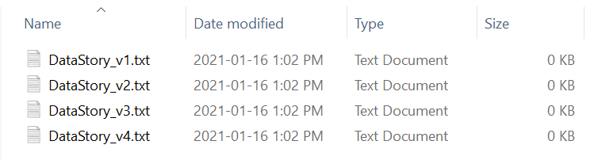

GitHub and version control
Learning objectives
Concepts
- Versioning
- Version control
- Git and GitHub
- Repository
- Fork
- Branch
- Commit
- Pull request
Practical skills
- Creating a GitHub account
- Forking a repository
- Creating a branch
- Committing changes to a branch
- Making a pull request to merge branches
Versioning and version control
Versioning
Versioning is, quite simply, what we do when we save new copies of files after making changes so that we can both keep track of those changes, retrieve older versions of the data go back and retrieve specific versions later. Here is a very basic example of versioning:

In this example, this is just me trying to write a compelling data story and saving my story under a new name each time. If I decide that I don’t like what I did in DataStory_v4.txt, I would simply open DataStory_v3.txt, do some writing and save my updated work as DataStory_v5.txt. Notice that in this scenario, I did not delete DataStory_v4.txt. Who knows, maybe I will have a change of heart later and realize that this was the best version of the story after all. That is of course an arbitrary choice and I could also have chosen to replace DataStory_v4.txt with the new work instead of creating a new DataStory_v5.txt. The key point here is that there is no versioning and data naming standards that, as individuals or groups, we need to follow. The best solution is the one that is best suited to your needs and the needs of your organization or clients. Theoretically, it could be that in some cases the best solution for you or your team is no versioning at all. That said, most data management projects, big or small, will certainly benefit from the multiple advantages of versioning, such as:
- Keeping track of changes.
- Maintaining a stable database while working on improvements.
- The ability to work on different improvements in parallel.
Another term that you might come across is release, and you might wonder what the difference is between a version and a release. Releases are typically official publication of a new version of a product, be it a database, a software, or something else. It will most likely be accompanied with official documentation, maybe an announcement on the organization’s website. In other words, a release is more or less the action of launching a product into the world, while a version is the specific state of the product at any given time.
Challenges of versioning
As you might imagine, and probably experience in your own file management experience, keeping track of different versions of a file (or even worse, a project that has multiple files) can quickly become a nightmare. Some of the main challenges are:
Actually keeping track of changes.
What can I say about the difference between the version 2 and the version 3 of a given file, aside from the fact that, hopefully, they are different and version 3 came after version 2? Did I had content to the file? remove content? fixed typos? If this is a long project, or an old one, I might have no other choice than to open the files and compare them, which is no guarantee that I will be able to quickly spot the changes.Dealing with non-chronological changes.
In the example above, both version 4 and 5 are built from version 3, and maybe version 6 will be built on version 2. Then I version 7 might be a combination 4 which was built on version 3 and version 6 which was built on version 2. This is all very confusing, and to some extent, it may explain why most of us rather embrace the chaos than attempt to adopt a system that allows us to better manage the different versions of our work.Collaborating.
Add in a few collaborators, and I might end up with files with both numbers and peoples initials (e.g., DataStory_v7(PM edits).txt, and DataStory_v7(BB_edits).txt). I could decide to not have multiple people making changes at the same time to reduce the complexity of versioning, but then I lose efficiency since I cannot work on a file while my collaborator is also working on it.Dealing with the sheer amount of files.
at some point, the number of files and versions of files might simply become to much to handle, and while the versions are there and could theoretically be used for some purpose, they have become in practice, useless. At this point they are nothing more than wasted space in your computer, or worse, a source of anxiety every time you open the folder.
Version control systems
Version control refers to systems that help you keep track of your versions and get more control over the process of developing and updating your database or software. Version control systems (VCS) record changes to a file or set of files to facilitate their tracking and retrieval. VCS reduce the need to accumulate copies of files with different names by having, instead, a database of file versions, and allow you to see who made the changes and when. VCSs can increase efficiency for you and your team by allowing different people to work on different part of the projects simultaneously, and also provides security features that allow you to recover the last working version of the project.
This may seem a little obscure at this point, but you will get a better sense of what version control is and what VCSs do as you progress in this chapter. For now, simply keep in mind that with a VCS you have two things: files that you work on, and a version database that records the changes that you make to those files. This fact alone reduces the need to accumulate different versions of each files on your computer, which is already a great help, but it does a lot more than than that.
Git and GitHub
Git is an example of a very popular and widely used VCS. One of its main particularity is that it is a distributed VSC, which means that every collaborator on a project will have it’s own local copy of the version database. This chapter will cover some of the basic Git functions, which are all that you actually need in order to start using it for your work. More advances features of Git can be useful for large software development teams, for instance, but are beyond the scope of this course. If you want to know more about the inner workings of Git, you’ll find some useful resource at the end of this chapter.
GitHub is a social media platform that runs Git in the background. It is very popular for coder and software developers, but is also widely used for a variety of purposes including data management and data sharing. It provides a user-friendly interface to Git that makes it accessible to a broader audience, with a ton of added features to help users manage their projects, collaborate on other users’ projects, document and publish their works, communicate, and so on. As you might be able to tell from the URL of the course website, one of those added features is free static website hosting.
Key concepts
Getting started with Git is relatively simple, and it is possible to go very far and ot extensively use Git and GitHub by only knowing a set of five key concepts:
Repositories
A repository is a space where you will be storing the files related to a project. Whenever a change is made to any of the files in the repository, Git will store in in the version database. You can create as many repositories as you want on GitHub, and they can be private or public. Public repositories are, as the name suggests, available to everyone on the internet, and they can view the history of the project, download any or all of the files, fork the repository (see below), report issues, propose changes, etc. You can also invite other users to collaborate to your private repository, in which case they will have almost the same priviledges than you, the owner, in terms of the operations they can perform in the repository.
Fork
A fork is a personal copy of another user’s repository. It can be used either as a starting point to develop your own project, or with the aim of making changes and eventually making a pull request for those changes to be merged to the original repository.
Branch
A branch is a parallel version of a repository. You can think of your Git repository as a tree with a trunk (the default name on GitHub is the master branch) and branches that are created in order to improve the tree. Branches can then be merged back into the master branch when the change is satisfactory. It is good practice to never work directly on the master branch of the repository, but to always work on branches and then merge them with the master branch. This way multiple people can work on their own branch at the same time without disruption the main version of the project. Only owners and invited collaborators of a repository can create branches. If you want to contribute to a public repository, you must first fork it (create your own copy), and then create a new branch on your fork where you will work on your changes.
Commit
When you make changes to a file in a Git repository, the software detects that changes have been made but does not incorporate the changes in the official version of the repository automatically. Committing changes means that you want to record that new version of the file(s) you’ve been working in the version database. One important feature of Git is that it requires that the user comments on the changes: you cannot commit a change without at least labeling it. This is extremely useful because it allows you to know what is different in this new version without necessarily having to look at the content of the file and compare it with the previous version. You can also have discussions around a specific commit on GitHub.
Pull request
To propose that your changes be included in the repository to which you want to contribute, you make a pull request. In other words, you ask the owner or administrator of the repository to merge your changes into the main branch of the repository. The administrator can then ask for clarification, and after the discussion, choose to either accept the request and merge add your changes to the repository, or reject your request. This step is obviously unnecessary and most likely skipped when making changes to your own repository.
Using Git and GitHub effectively
There are many ways of working with Git or GitHub by yourself or with other people. And if you plan to use GitHub to manage a collaborative project, it is a good idea to discuss with the team members and come up with an agreed upon process for reporting issues, working on fixes and updates, creating and merging branches, etc. It may be useful to document the desired workflow so that current and new collaborators can refer to it. This is especially useful if your repository is public: any GitHub users might have suggestions for changes or may wish to propose some changes. Having some guidelines available might facilitate these interactions.
There are many ways to use Git to manage a project, and several workflows can be found on the web, some of them more complex than other. I recommend the following workflow as a starting point for you and your team:
- Create a new branch of the repo.
- Make changes and commit them to your branch.
- Make a pull request.
- Discuss the changes.
- Merge the branch into the main branch.
This is also a widely used workflow, which can facilitate collaborations with other users. One important note is that only collaborators can create branches of your repository. To suggest a change to a public repository for which you are not a collaborator, the steps would be:
- Create a fork of the repository (which is your own copy of the entire repository and its history)
- Create a new branch.
- Make changes and commit them to your branch.
- Make a pull request for the branch of your fork.
- Discuss the changes.
- Merge the branch into the main branch.
As you have probably noticed, the only difference is the need to fork the repository first, the rest of the workflow remains exactly the same.
Making good commits
The point of version control is to have a useful history of changes made to a project over time and to go back to any of these previous versions. However, the quality of your project’s history (and your ability to use it) depends on the quality of your commits. So here are a few committing best practices.
Commit related changes.
If you are working on different, unrelated changes to the project, make distinct commits for each change.Commit often.
Divide complex tasks into smaller chunks and commit after each chunk is completed.Commit only completed changes.
Do not commit incomplete work because the day is over, commit only when the task is done.Write a good commit message.
Your commit messages should be able to provide clear and useful information about the changes that are made.
Nothing will break if your commits do not follow these tips. You just will not fully benefit from the full power of Git and GitHub.
GitHub demo
At this point, you might be wondering what all of this actually looks like in practice. So in the video below, I walk you through the processes described above. The next section is an optional exercise in which you will be perfoming many of these same steps yourself.
Resolving conflicts, network graph, issues, and keeping an updated fork
Exercises
- Create your GitHub account
If you already have a GitHub account, then you can obviously skip this step. Otherwise, simply go on the GitHub website to sign up. - Tell me what your GitHub username is
Please fill out this Google Form to register your GitHub username, to make sure that I know who you are when we are interacting on GitHub. - Go to the course repository and take a look at the content of the data_story.txt file.
- Fork the repository.
- Create a branch.
- Make a change to the repository.
I left a typo or two in there for you to fix, if you want to. Alternatively, you can add a chapter to the story, or claim authorship, write a chapter, whatever you want. - Commit your changes to your new branch.
- Make a pull request to propose the merge of your branch and the main branch of my repository.
References and additional resources
For more information about all the GitHub features and how to use them, the GitHub official documentation is a good place to start.
The GitHub Learning Lab has a wide collection of small interactive courses that you can do for free. The courses give you tasks that you need to perform on your GitHub account with GitHub robots tracking your progress and walking you through the steps. First Day on GitHub and the First Week on GitHub cover most of the basic skills that you’ll need, but there are also courses advanced users.
GitHub is an extremely popular platform, so if you prefer video tutorials, you will also find a lot of them on YouTube.
There is also a desktop version of GitHub that can help you manage your repositories and workflows more efficiently.
If you want to get deeper under the hood and learn how to use Git from the command line. The second edition of the Pro Git book, by Scott Chacon and Ben Straub is available on the official Git website.